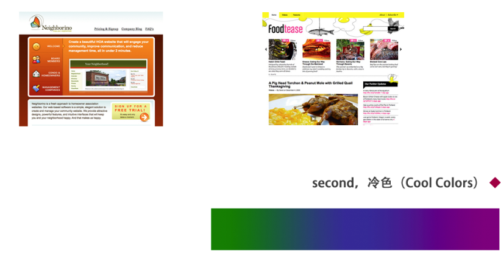
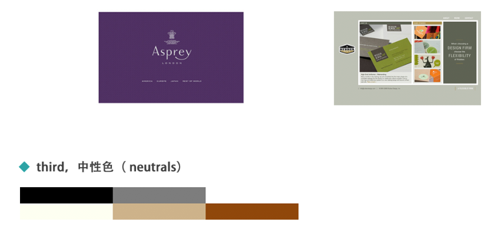

一般上网的时候呢，大家第一时间注意到的肯定是这个网站或鲜亮或冷艳的色彩，漂亮的网页设计和视觉色彩有很大的关系 。那现在我们来了解了解色彩。
Come on!
首先呢，色调（hue）是最最基本的颜色术语、通常用来表示物体的颜色。当我们评论什么说红色、蓝色、绿色时，我们说的就是色调啦。
最初设计时使用的色调会给网站浏览者留下最初印象，有经验的用户甚至可以通过网站页面的色彩大致了解整个网站的功能性质和面向的受众。就好像公益网站多绿色，而购物网站则倾向于红色、橙色，许多国外高端品牌钟爱黑、白与灰色作为主色调。
在诸多色彩中我们大致可以分为暖色系、冷色系和中间色。这三种颜色简直百搭适用于任何色系！ 接下来就让我们来好好聊聊这三种色系在网址中的运用吧……
暖色主要是由红、橙、黄三种颜色的混合。看到它们会不会想起烈焰、落叶以及日出、日落呢？它们通常象征活力、激情和积极，当看到一些关于盛大事件、节日、购物、美食、服务等主题的网站就多能看到以此为主色调。
冷色系包含绿色、蓝色和紫色，相对暖色，强度要弱。它们是夜、水和自然的代表颜色，通常给人感觉是舒缓，放松，以及有一点冷淡。在设计中使用冷色可以营造一种冷静或专业的感觉。
中性色通常用作设计作品的背景色，再用其他比较醒目的颜色突出重点，无论是和暖色或冷色搭配都是不容易出错的色彩选择。
一般来说初学者可以选择以一个颜色作为主色调，再挑选两到三个颜色作为辅助色和重点部分的点缀色，想要稳妥一些的话可以选择全冷色或者全暖色、冷色配中色、冷色配暖色这样的色彩方案。
当然啦只要你自己喜欢无论什么样的色彩搭配都可以进行尝试～但在初学者选择搭配颜色时却是有一个大坑一定需要避开，每个颜色都有它完全对立的颜色称之为互补色，简单来说互补色就是看在眼里颜色差异最明显的两个颜色啦。这是一种可谓色彩搭配中终极地狱难度关卡的存在，用得好可以非常鲜艳特别，但用得糟糕……看过我们传统民俗中的红配绿吧？